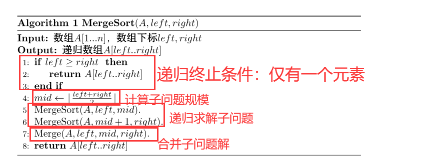
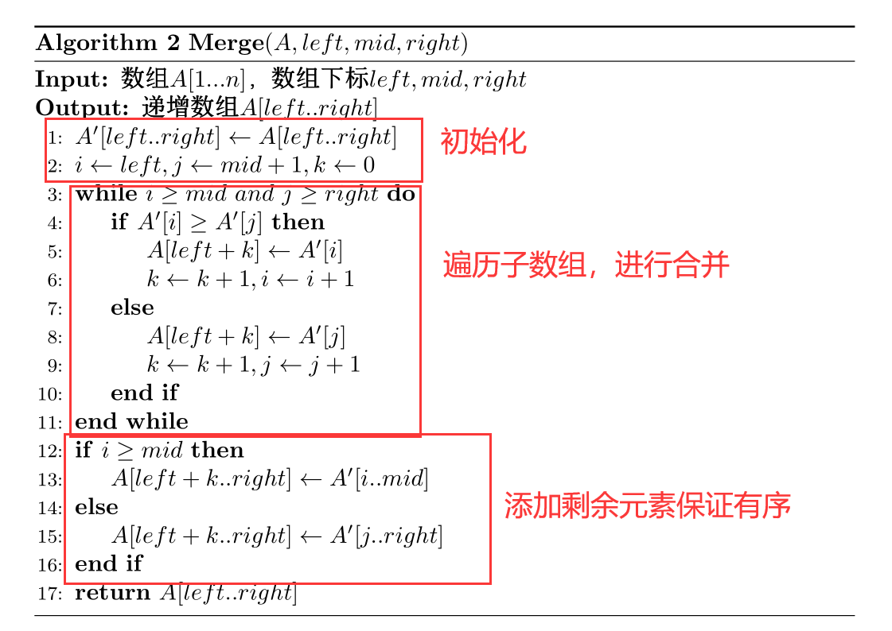
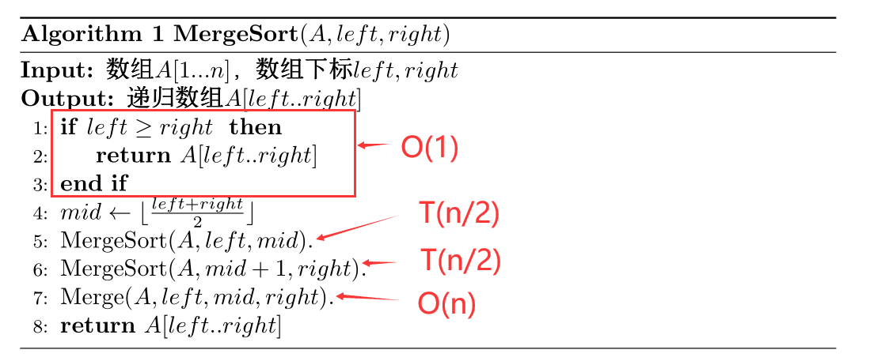
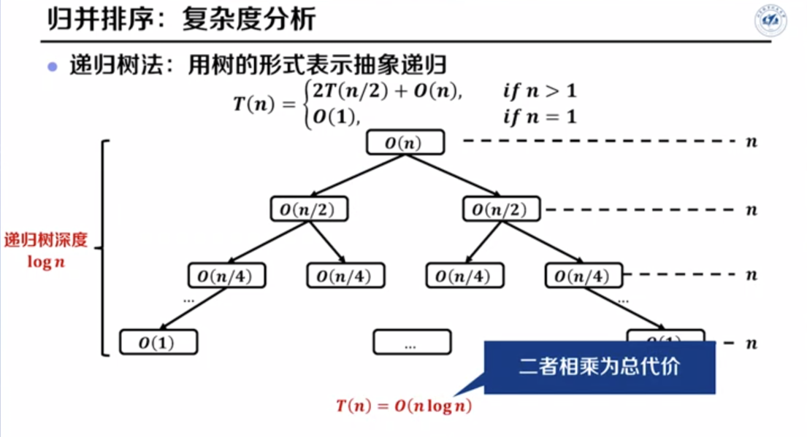
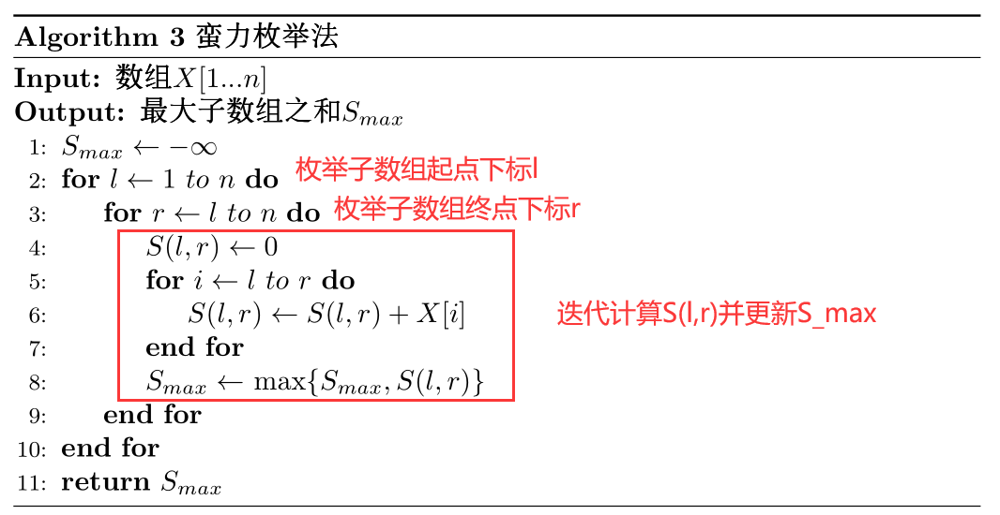
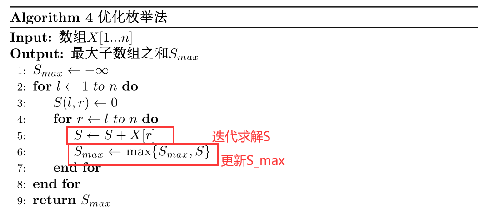
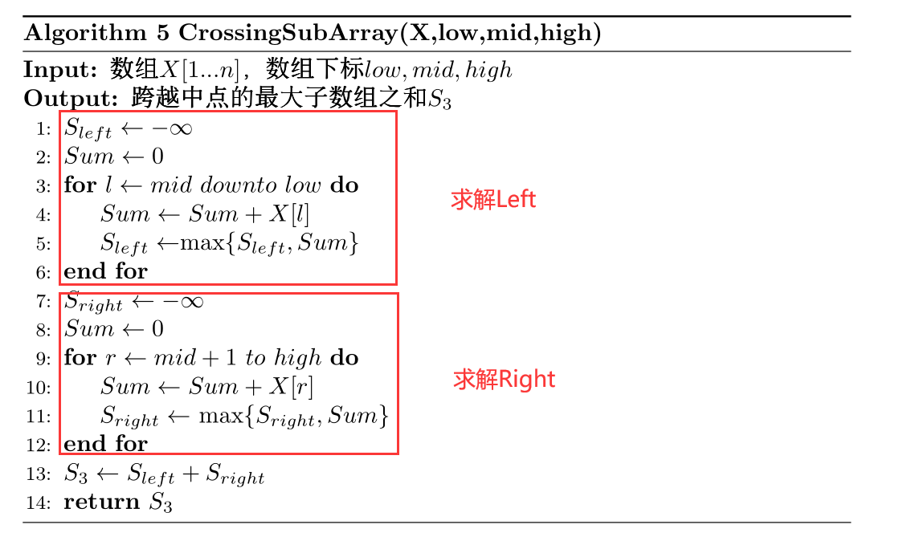
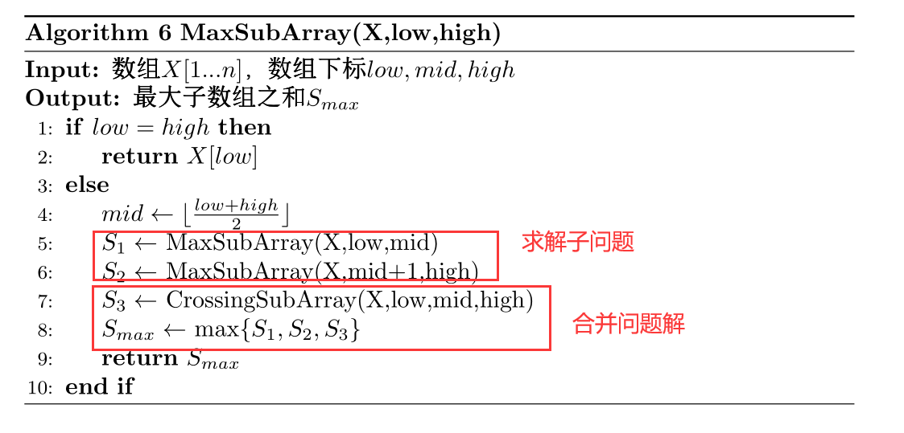

给定计算问题，算法是一系列良定义（没有歧义）的计算步骤，逐一执行计算步骤即可得预期的输出。
有穷性：算法必须在有限个计算步骤后终止。
确定性：算法必须是没有歧义的。
可行性：可以机械地一步一步执行基本操作步骤。
自然语言、机器语言、伪代码（推荐）。
例如，插入排序的伪代码可以表示如下：
1 2 3 4 5 6 7 for j<-2 to n do key<-A[j] while i>0 and A[i]>key do A[i+1]<-A[i] i<-i-1 end end
选择排序的伪代码可以表示如下：
1 2 3 4 5 6 7 8 9 10 11 for i<-1 to n-1 do cur_min<-A[i] cur_min_pos<-i for j<-i+1 to n do if A[j]<cur_min_pos then cur_min<-A[j] cur_min_pos<-j end end 交换 A[i] 和 A[cur_min_pos] end
这样，算法运行时间仅依赖于问题输入规模 n n n T ( n ) T(n) T ( n )
计算每行伪代码操作次数并求和。例如，插入排序的 T ( n ) = 3 2 n 2 + 7 2 n − 4 T(n)= \frac{3}{2}n^2+\frac{7}{2}n-4 T ( n ) = 2 3 n 2 + 2 7 n − 4 T ( n ) = 2 n 2 + 3 n − 4 T(n)=2n^2+3n-4 T ( n ) = 2 n 2 + 3 n − 4
渐近分析 ：分析 n n n T ( n ) T(n) T ( n )
渐近紧确界：用记号 θ \theta θ g ( n ) g(n) g ( n ) θ ( g ( n ) ) \theta(g(n)) θ ( g ( n ) ) θ ( g ( n ) ) = { T ( n ) : ∃ c 1 , c 2 , n 0 > 0 , 使 得 ∀ n ≥ n 0 , c 1 g ( n ) ≤ T ( n ) ≤ c 2 g ( n ) } \theta(g(n))=\{ T(n):\exists c_1,c_2,n_0>0,使得\forall n\geq n_0,c_1g(n)\leq T(n)\leq c_2g(n)\} θ ( g ( n ) ) = { T ( n ) : ∃ c 1 , c 2 , n 0 > 0 , 使 得 ∀ n ≥ n 0 , c 1 g ( n ) ≤ T ( n ) ≤ c 2 g ( n ) } T ( n ) T(n) T ( n ) c 1 g ( n ) c_1g(n) c 1 g ( n ) O O O Ω \Omega Ω
渐近上界：用记号 O O O g ( n ) g(n) g ( n ) O ( g ( n ) ) O(g(n)) O ( g ( n ) ) O ( g ( n ) ) = { T ( n ) : ∃ c , n 0 > 0 , 使 得 ∀ n ≥ n 0 , 0 ≤ T ( n ) ≤ c g ( n ) } O(g(n))=\{T(n):\exists c,n_0>0,使得\forall n\geq n_0,0\leq T(n)\leq cg(n)\} O ( g ( n ) ) = { T ( n ) : ∃ c , n 0 > 0 , 使 得 ∀ n ≥ n 0 , 0 ≤ T ( n ) ≤ c g ( n ) }
渐近下界：用记号 Ω \Omega Ω g ( n ) g(n) g ( n ) Ω ( g ( n ) ) \Omega(g(n)) Ω ( g ( n ) ) Ω ( g ( n ) ) = { T ( n ) : ∃ c , n 0 > 0 , 使 得 ∀ n ≥ n 0 , 0 ≤ c g ( n ) ≤ T ( n ) } \Omega(g(n))=\{T(n):\exists c,n_0>0,使得\forall n\geq n_0, 0\leq cg(n)\leq T(n)\} Ω ( g ( n ) ) = { T ( n ) : ∃ c , n 0 > 0 , 使 得 ∀ n ≥ n 0 , 0 ≤ c g ( n ) ≤ T ( n ) }
T ( n ) = θ ( g ( n ) ) T(n)=\theta(g(n)) T ( n ) = θ ( g ( n ) ) T ( n ) = Ω ( g ( n ) ) T(n)=\Omega(g(n)) T ( n ) = Ω ( g ( n ) ) T ( n ) = Ω ( g ( n ) ) T(n)=\Omega(g(n)) T ( n ) = Ω ( g ( n ) )
算法运行时间称为算法时间复杂度 ，通常使用渐近记号 O O O O ( n 2 ) O(n^2) O ( n 2 ) O ( n 2 ) O(n^2) O ( n 2 )
之前的排序方法简述：
选择排序：从待排序元素中迭代选出最小值并排序。
插入排序：依次将每个元素插入到已排序序列之中。
分解数组：将数组A [ 1 , n ] A[1,n] A [ 1 , n ] A [ 1 , ⌊ n 2 ⌋ ] A[1,\lfloor \frac{n}{2} \rfloor] A [ 1 , ⌊ 2 n ⌋ ] A [ ⌊ n 2 ⌋ + 1 , n ] A[\lfloor \frac{n}{2} \rfloor+1,n] A [ ⌊ 2 n ⌋ + 1 , n ]
递归 求解：递归解决子问题得到两个有序的子数组
合并 排序：将两个有序子数组合并为一个有序数组
归并排序算法的步骤即分而治之法 的一般步骤：分解原问题->解决子问题->合并问题解。
归并排序算法伪代码如下：


T ( n ) T(n) T ( n ) M e r g e S o r t ( A , 1 , n ) MergeSort(A,1,n) M e r g e S o r t ( A , 1 , n )
为便于分析，假设 n n n

可以得出递归关系式：
T ( n ) = { 2 T ( n / 2 ) + O ( n ) , i f n > 1 O ( 1 ) , i f n = 1 T(n)=\left\{
\begin{array}{lr}
2T(n/2)+O(n), & if\ n>1 \\
O(1), & if\ n=1
\end{array}
\right.
T ( n ) = { 2 T ( n / 2 ) + O ( n ) , O ( 1 ) , i f n > 1 i f n = 1
递归树法 ：用树的形式表示抽象递归。

递归式分析方法：递归树法、代入法（猜测+数学归纳法证明）、主定理法。【详见高数，这里不提了】
输入 ：给定一个数组X [ 1.. n ] X[1..n] X [ 1 . . n ] l , r ( l ≤ r ) l,r(l\leq r) l , r ( l ≤ r )
S ( l , r ) = ∑ i = l r X [ i ] S(l,r)=\sum_{i=l}^rX[i]
S ( l , r ) = i = l ∑ r X [ i ]
输出 ：求出 S ( l , r ) S(l,r) S ( l , r ) S m a x S_{max} S m a x
枚举 n + C n 2 n+C_n^2 n + C n 2 [ l , r ] ( l ≤ r ) [l,r](l \leq r) [ l , r ] ( l ≤ r ) S m a x S_{max} S m a x
伪代码如下：

时间复杂度：O ( n 3 ) O(n^3) O ( n 3 )
缺点：重复计算，效率低
利用已有的子数组和继续计算下一组子数组和。
核心思想：S ( l , r ) = ∑ i = l r X [ i ] = S ( l , r − 1 ) + X [ r ] S(l,r)=\sum_{i=l}^rX[i]=S(l,r-1)+X[r] S ( l , r ) = ∑ i = l r X [ i ] = S ( l , r − 1 ) + X [ r ]
伪代码如下：

时间复杂度：O ( n 2 ) O(n^2) O ( n 2 )
一般步骤：
将数组 X [ 1.. n ] X[1..n] X [ 1 . . n ] X [ 1.. n / 2 ] X[1..n/2] X [ 1 . . n / 2 ] X [ n / 2 + 1.. n ] X[n/2+1..n] X [ n / 2 + 1 . . n ]
递归求解子问题
S 1 S_1 S 1 X [ 1.. n / 2 ] X[1..n/2] X [ 1 . . n / 2 ] S 2 S_2 S 2 X [ n / 2 + 1.. n ] X[n/2+1..n] X [ n / 2 + 1 . . n ]
合并子问题，得到S m a x S_{max} S m a x
S 3 S_3 S 3 数组 X X X S m a x = m a x { S 1 , S 2 , S 3 } S_{max}=max\{S_1,S_2,S_3\} S m a x = m a x { S 1 , S 2 , S 3 }
如何求解S 3 S_3 S 3
记m i d = n / 2 mid=n/2 m i d = n / 2
S 3 S_3 S 3
L e f t Left L e f t X [ m i d ] X[mid] X [ m i d ] R i g h t Right R i g h t X [ m i d + 1 ] X[mid+1] X [ m i d + 1 ] S 3 = L e f t + R i g h t S_3=Left+Right S 3 = L e f t + R i g h t
求解L e f t Left L e f t
记 m i d = n / 2 mid=n/2 m i d = n / 2
从 X [ m i d ] X[mid] X [ m i d ]
以 X [ m i d ] X[mid] X [ m i d ] S l e f t = 4 S_{left}=4 S l e f t = 4
求解R i g h t Right R i g h t
记 m i d = n / 2 mid=n/2 m i d = n / 2
从 X [ m i d + 1 ] X[mid+1] X [ m i d + 1 ]
时间复杂度：T ( n ) = T ( L e f t ) + T ( R i g h t ) = O ( m i d ) + O ( n − m i d ) = O ( n ) T(n)=T(Left)+T(Right)=O(mid)+O(n-mid)=O(n) T ( n ) = T ( L e f t ) + T ( R i g h t ) = O ( m i d ) + O ( n − m i d ) = O ( n )
求解 S 3 S_3 S 3

分而治之算法伪代码如下：

时间复杂度分析：
输入规模：n n n
T ( n ) = { 1 , n = 1 2 ⋅ T ( n / 2 ) + O ( n ) , n > 1 T(n)=\left\{
\begin{array}{lr}
1, & n=1 \\
2\cdot T(n/2)+O(n), & n >1
\end{array}
\right.
T ( n ) = { 1 , 2 ⋅ T ( n / 2 ) + O ( n ) , n = 1 n > 1
时间复杂度 O ( n log n ) O(n\log n) O ( n log n )